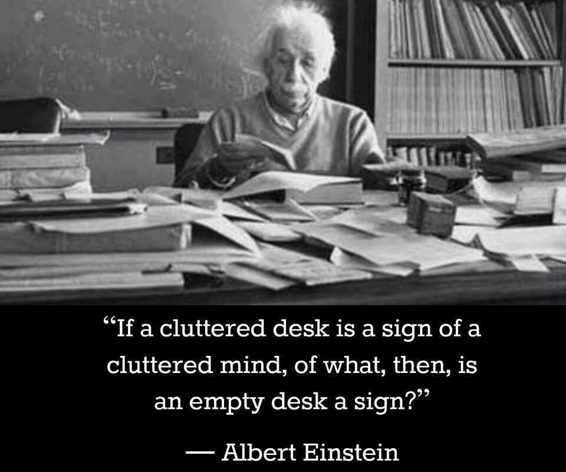
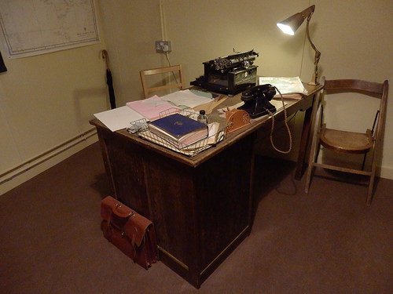
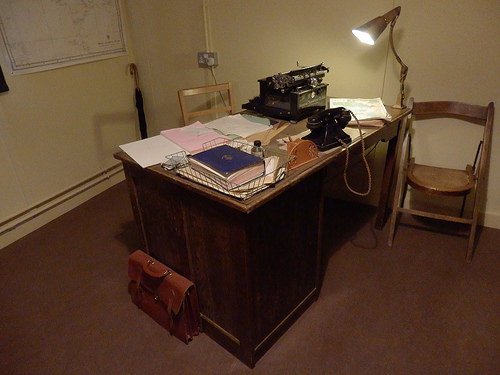
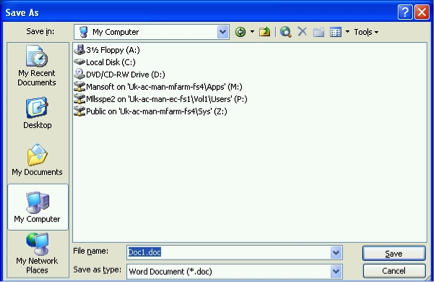
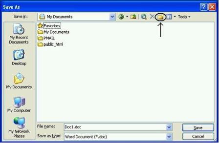

Chapter 5 Setting up your working environment
There is a myth about the scientist and the messy workspace, typically illustrated with Albert Einstein: 
However many of us need order to be able to work properly. An organised workspace is also prominent, as we can see with these famous work spaces of : Galileo, Marie Curie, John Dalton, Alan Turing, and Charles Dickens:
 

When working with data, you have to consider your workspace. You can think of your computer folders as your desk. It helps immensely to keep our data, your code and your notes organised. You will likely have a project folder, where you save your data, your graphs, your analysis outputs, etc. You want to consider the layout of this folder, how many subfolders will you have, what is the best structure to work for you? You might think this is trivial, but when you are working on a project with multiple data sets, or many graphs, it can get very messy very quickly. I recommend going through this resource from the university of Cambridge data management guide to consider Naming and Organising Files, Documentation and Metadata, Managing References, and Organising E-mail.
Normally, say when you are working on a Windows PC at home, you can save files to your C: drive, and easily access them the next time you turn the computer on. When you are using computers at the university, however, you cannot be certain of being able to use the same computer again when you want to find and use your file again. Fortunately, once you have logged on to a computer at the university, a personal drive is available for you to use, and in effect, this drive follows you around to whichever PC you are logged on to. All students and staff have a personal file storage space on the network - known as the P: drive as this is usually the network drive letter allocated to it. Wherever you log on to the campus network your P: drive is available (in PC Clusters the My Documents icon on the desktop is a shortcut to the P: drive).
You should already have a username and password with which to log on. Your username has 7 or 8 letters/digits, typically beginning ‘m…’. On the computers in the Faculty clusters (where you work in class time) you will see the Faculty computer ‘image’ and a version of the operating systems Windows 7.
Away from the campus you can download and upload files to and from your P: drive over an Internet connection - for example to and from your home computer, but please remember that large files may take a long time to upload/download depending on the speed of your home internet connection. See here for details about remote access.
It’s generally good to create a folder to save your data and our outputs in, which we will call a working directory. So firstly, before we begin to do any work, we should create our working directory. This is simply a folder where you will save all our data, and also where you will be reading data in from. You can create a new folder, where you will save everything for this course, or you can choose an existing folder. It’s advised that you create a folder, and also give it some name you remember, that will be meaningful. Generally try to avoid spaces and special characters in folder (and file) names. Here is a handy guide you should read about naming files and folders that will be relevant for all your future work.
It’s not necessarily a good idea to just dump everything into ‘Desktop’ either, as you want to be able to find things later, and maybe keep things tidy. We will now show you where your personal drive is and how to save your word file to it.
Just to have some practice with doing this, create a Word document to put into the folder. Open Microsoft Word now (you can find this on the ‘Start’ button in the bottom left corner of your screen). The only thing you have to type in the document is your name.
Save the file to your p: drive as follows. Click on the save button (or click File then Save in the drop down menus). The dialogue box below will appear. Click on the down arrow in the ‘Save in:’ box to change the default directory to your P: drive. The P: drive is the one that starts with your user name. Click on this drive.

Now create a new folder within your P: drive, especially for material for this course. To do so, click on the ‘Create new folder’ icon, as shown in the dialogue box below.

Label the new folder ‘LAWS20441’. You will now have a series of folders in your p: drive (some of these you haven’t created yourself, they have been provided for you by the university), one of which you can store course material in. Finally, name your Word document ‘Trial Document’ (in the filename box) and click ‘Save’. As noted above, you can remotely access your p: drive (from home or elsewhere). You can do this by logging into your personalised university portal (https://my.manchester.ac.uk).
A word of caution, if your P: drive is full (and this tends to happen when you save image or sound files to it), there is a chance that some of the applications you want to use do not work. So make sure you keep your P: drive tidy if you don’t want to run into problems.